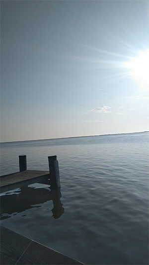
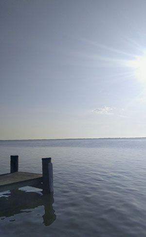
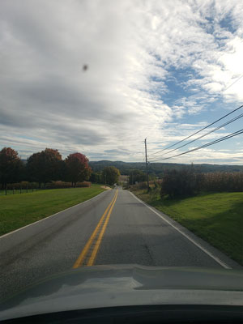
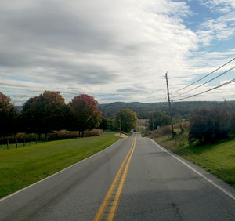
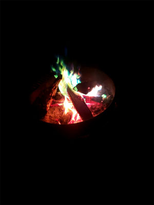
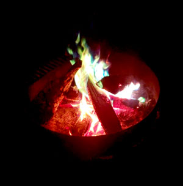
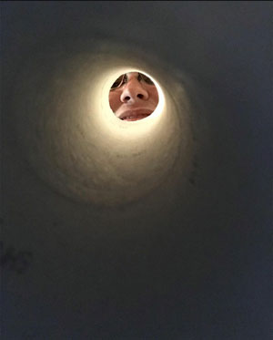
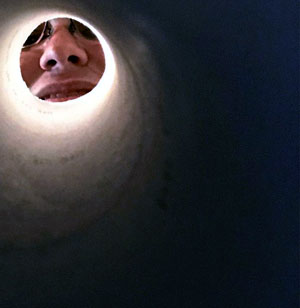

Clay Craig's Photo Project for AENG 110 Class |
||
| Home Print Project Photo Project Video Project | ||
|
For the Photo Project we edited photos through Photoshop. We then changed the Structure of the video, the alignment, and the colors to make the photos look better then they once did before. |

This photo was taken during the summer of 2023. On a camping trip in Ocean City Maryland. This photo is using rule of thirds due to it being centered on the dock. This is using natural lighting from when I took it earlier in the morning while the sun was rising. The issue with the photo is how bright the sun looks in it. |

To change the image I rotated it by 3.2 degrees to fix the horizon line from not being sideways. I then cropped the image to make it straight and get rid of the extra part of the dock at the bottom that was not needed. I changed the hue by +14, the saturation by +12, and decreased the lighting by -5. I also changed the RGB level to around 1.17 while leaving the black and white where they originally were. |
|

This photo was taken during a trip over to my friends house on October 1st. It was taken with natural lighting. The picture was taken from a car window so it has some issues. There is a dot in the top right from the window and the bottom you can see the hood of the car. The technique used in the photo would be leading lines. |

I started by cropping the Photo. I then changed the contrast by .11 by using the auto contrast feature. I then changed the curves a bit to change some colors around. I then rotated the image a bit by 6 degrees to straighten the horizon line. I then changed the exposer and gamma a bit as well to darken the picture and change lighting. |

This photo was taken during the weekend over at a friends. The lighting is bare minimum due to it being dark. The main point of the picture is the camp fire and it was used with centering. I was around five feet away when I took this photo. |

To change the image I changed the color contrast. I Brightened the shadows of red to +25, I then changed the mid-tones of red +20 and brightened the magenta -14 to darken the blues. I did this to brighten the flame colors in the picture. I then changed the contrast by -10. I then changed the levels to 1.42 to brighten the picture a bit more. I couldn’t mess with the white and black balance due to their not being much light. I also rotated the picture by 6 degrees to center it more. The last thing I did was crop the picture. |
|

This photo was taken over at a friends house. This was taken using framing. This was a close up photo taken through a paper towel roll of his face. The lighting in the photo could be better and have a better contrast. |

To begin with I cropped the picture to change it to rule of thirds as well as framing. I then changed the levels and shifted it to .89 closer to the darker side. I then also shifted the color balance. I shifted the red to +23 and moved it more towards yellow by -15. | |
| Home Print Project Photo Project Video Project |
© 2023 Clay Craig |
|